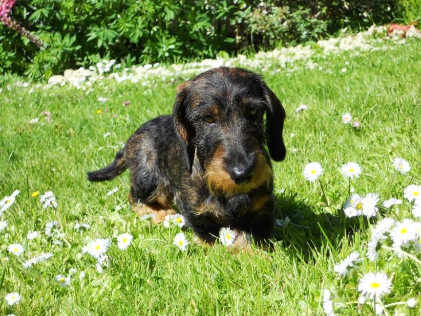
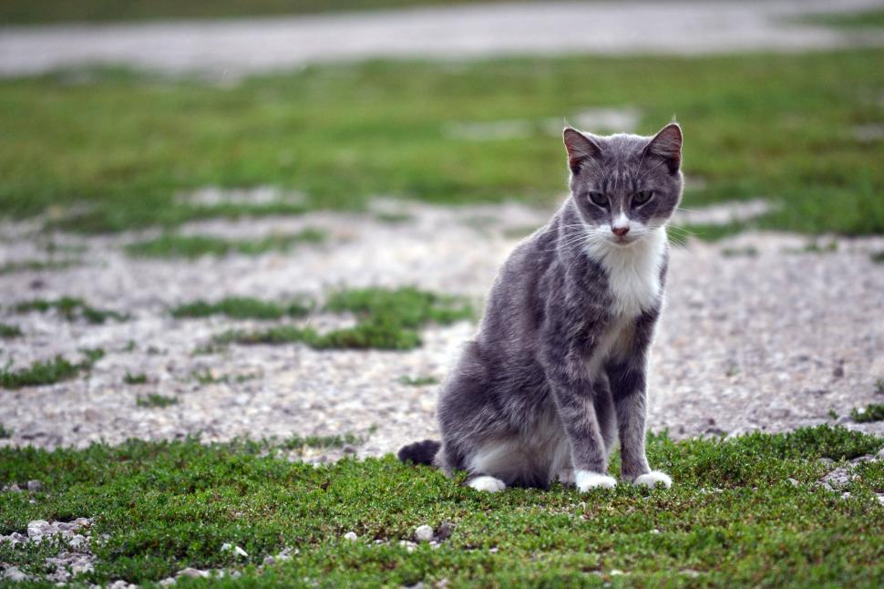
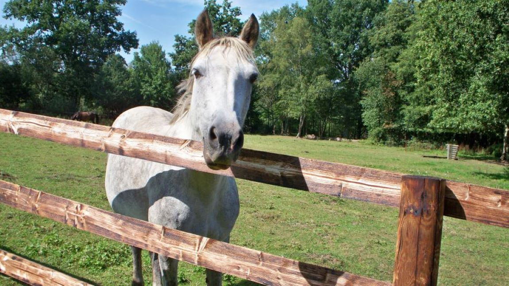

Perros
Tenemos mas de 15 perros cuidados, todos con sus correspondientes vacunas, espacio para que corran y jueguen y acceso a espacio comunes con otros animales.

Gatos
En el hogar contamos con más de 10 gatos cuidados, todos con sus correspondientes vacunas, ellos son más independientes y accecen sin problemas a todos los sectores del refugio.

Caballos
En el hogar contamos con tres caballos rescatados, que fueron cuidados por veterinarios de nuestro grupo, acá se les da aseo diario, limpieza, cuidado del herraje, hidratación y se los hace ejercitar físicamente.